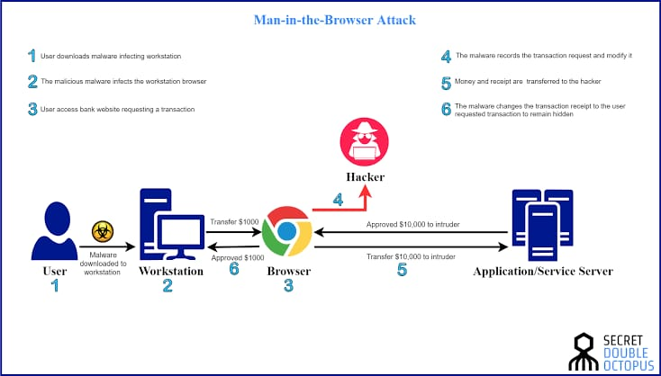
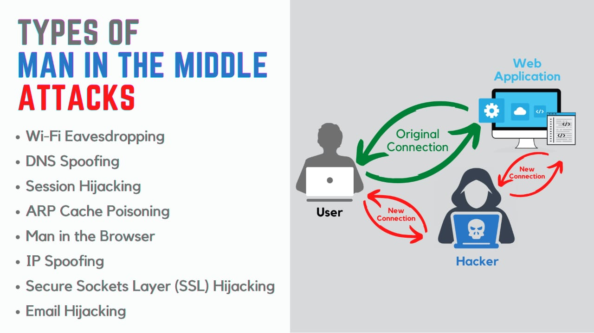

What is Man In The Middle(MITM) & How it is done?
A man-in-the-middle (MITM) attack is a type of cyber attack where the attacker intercepts communication between two parties and can monitor, alter, or inject data into the communication. The attacker effectively acts as a "middleman" between the two parties, hence the name.
In a MITM attack, the attacker intercepts the communication between the two parties and can eavesdrop on the conversation, steal sensitive information, or alter the content of the communication to trick one of the parties into taking a specific action. The attacker can carry out the attack by exploiting vulnerabilities in the communication protocols or by using tools such as ARP spoofing to redirect traffic through the attacker's computer.
To prevent MITM attacks, it is important to use encryption for sensitive communications and to verify the authenticity of the parties involved in the communication. For example, using secure protocols such as HTTPS and SSL, and verifying the digital certificate of the website, can help protect against MITM attacks. In addition, using virtual private networks (VPNs) can help secure the communication by encrypting it end-to-end, making it more difficult for an attacker to intercept the communication.
Process :
The process of a man-in-the-middle (MITM) attack typically involves the following steps:
1.Preparation: The attacker prepares for the attack by researching the target and identifying weaknesses in the communication system or protocols. The attacker may also obtain or develop tools that can be used to carry out the attack.
2.Interception: The attacker intercepts the communication between the two parties by positioning themselves between the two parties and routing the communication through their own device. This can be done by exploiting vulnerabilities in the communication protocols or by using ARP spoofing or DNS spoofing to redirect the communication.
3.Monitoring: The attacker monitors the communication between the two parties, eavesdropping on the conversation and capturing sensitive information.
4.Alteration: In some cases, the attacker may alter the content of the communication, either to trick one of the parties into taking a specific action or to hide their activities. For example, the attacker may alter the contents of an email or web page to inject malicious code.
5.Attack execution: The attacker carries out their attack, using the information and control gained from the intercepted communication. For example, the attacker may steal sensitive information, install malware, or carry out unauthorized transactions.
6.Concealment: The attacker may hide their activities by concealing their tracks or disguising their actions. For example, the attacker may use encryption or other techniques to hide their activities from detection.
It is important to note that the process of a MITM attack may vary depending on the specific attack and the goals of the attacker. However, these are the general steps involved in a typical MITM attack.
Awareness on Man In The Middle(MITM) for Post-production
- Use Encryption
- Verify Authenticity
- Use VPNs
- Keeo software up-to-date
- Educating Employees
- Monitor network traffic
- Use anti-malware software
Case Study :-
A real-world case study about man-in-the-middle (MitM) attacks in a post-production company involves a major Hollywood post-production studio that was targeted by a group of cybercriminals. The attackers used a MitM attack to intercept communications between the studio and its clients, including film studios and production companies.
The attackers were able to steal confidential information, such as film scripts and footage, as well as financial data related to the studio's clients. The stolen information was then used to extort the studio and its clients, demanding large sums of money in exchange for the return of the stolen data.
The studio quickly realized that they were under attack and engaged a team of cybersecurity experts to investigate and respond to the attack. The experts were able to identify the attackers and the methods used in the MitM attack, including the use of fake SSL certificates and the redirection of traffic to a server controlled by the attackers.
The studio also worked with law enforcement agencies to pursue legal action against the attackers and to recover the stolen data. Despite the efforts of the studio and the cybersecurity experts, the attackers were able to monetize some of the stolen information, resulting in significant financial losses for the studio and its clients.
This case study highlights the dangers of MitM attacks and the importance of protecting against them in the post-production industry. It also demonstrates the need for organizations to have robust cybersecurity practices in place, including regular security training for employees, the use of secure communication protocols, and the implementation of effective incident response plans.